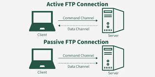

File Transfer Protocol (FTP)
What is FTP?
File Transfer Protocol (FTP) is a standard network protocol used to transfer computer files from one host to another over a TCP-based network, such as the Internet. It is built on a client-server model architecture and uses separate control and data connections between the client and the server.
How FTP Functions
FTP typically requires a user to log in to the server to establish a connection. There are two primary modes of operation:
- Active Mode: The client opens a port and waits for the server to connect to it to start the data transfer.
- Passive Mode: The server opens a port and waits for the client to connect to it. This is more common today as it works better with modern firewalls.

FTP vs. SFTP
While original FTP sends data in plain text (including usernames and passwords), it is considered insecure for modern web use. SFTP (SSH File Transfer Protocol) is the secure version that encrypts both commands and data to prevent sensitive information from being intercepted during the transfer.